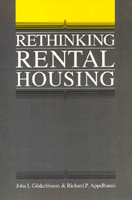

Challenges conventional assumptions concerning the operation of housing markets
Challenges conventional assumptions concerning the operation of housing markets


 Challenges conventional assumptions concerning the operation of housing markets
Challenges conventional assumptions concerning the operation of housing markets

|  |
Rethinking Rental HousingJohn I. Gilderbloom and Richard P. Appelbaum, foreword by Joe R. Feaginpaper EAN: 978-0-87722-538-6 (ISBN: 0-87722-538-9) |
Robert E. Park Award, American Sociological Association, 1989
"[T]he most significant piece on housing policy written in the last 40 years.... [It] should be required reading for every planner and elected official involved in housing policy."
—APA Journal
In recent years, almost daily media attention has been focused on the plight of the homeless in cities across the United States. Drawing upon experiences in the U.S. and Europe, John Gilderbloom and Richard Appelbaum challenge conventional assumptions concerning the operation of housing markets and provide policy alternatives directed at the needs of low- and moderate-income families. Rethinking Rental Housing is a ground-breaking analysis that shows the value of applying a broad sociological approach to urban problems, one that takes into account the basic economic, social, and political dimensions of the urban housing crisis.
Gilderbloom and Appelbaum predict that this crisis will worsen in the 1990s and argue that a "supply and demand" approach will not work in this case because housing markets are not competitive. They propose that the most effective approach to affordable housing is to provide non-market alternatives fashioned after European housing programs, particularly the Swedish model.
An important feature of this book is the discussion of tenant movements that have tried to implement community values in opposition to values of development and landlord capital. One of the very few publications on rental housing, it is unique in applying a sociological framework to the study of this topic.
"Rethinking Rental Housing should be required reading for everyone involved in housing policy. It’s easily the most significant piece on housing policy written in the last 30 years.... Gilderbloom and Appelbaum strip away the faulty and fictional basis for a national housing policy and offer in its stead a sound, comprehensive, and rational program to guide American housing policy into the 21st century. They offer the first truly effective approach to solving the growing problem of housing affordability."
—Daniel Lauber, immediate past President, American Planning Association
"... An exhaustive and penetrating study of rental housing in the United States. They go beyond the usual preoccupation with market factors to demonstrate the social and political processes which determine the availability of rental housing.... Anyone who wants to understand the growing crisis in rental housing in America will want to read this book."
—Frances Fox Piven and Richard A. Cloward
"This book is a compelling debunking of many of the myths which surround the debate over housing subsidies and policy...."
—Barry Zigas, President, National Low Income Housing Coalition
"An impressive and important work. This book is a landmark in the discussion of rental housing in the U.S. It should be consulted by policymakers, read by housing activists, and assigned by professors."
—Derek Shearer
John I. Gilderbloom is Assistant Professor of Sociology and Research Associate at the Center for Public Policy, University of Houston.
Richard P. Appelbaum is Associate Professor of Sociology at the University of California, Santa Barbara.
© 2015 Temple University. All Rights Reserved. This page: http://www.temple.edu/tempress/titles/508_reg.html.